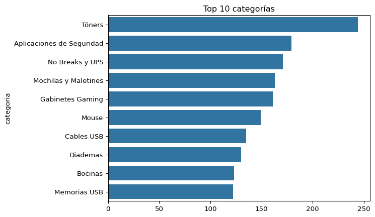
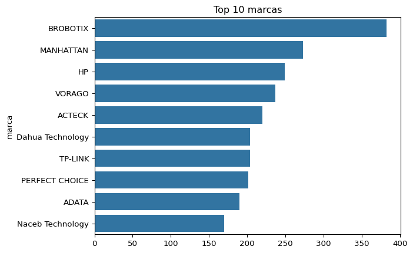
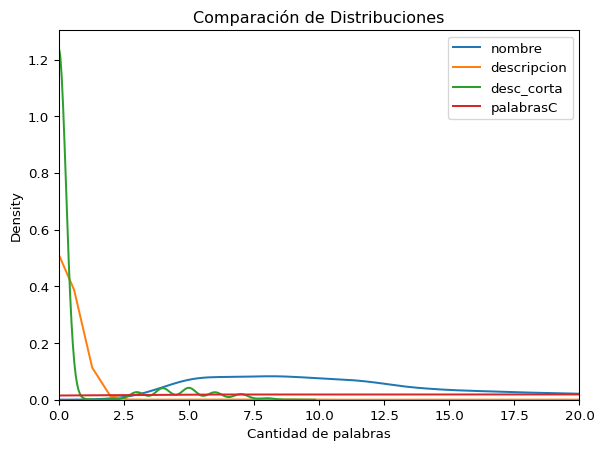

['nombre',
'clave',
'categoria',
'categoria',
'marca',
'tipo',
'modelo',
'descripcion',
'descripcion_corta',
'palabrasClave']Comprensión de los datos
0.1 Recolección de los datos
0.1.1 Datos existentes
La fuente principal de información es la base de datos SQL local de la empresa, específicamente las tablas que contienen los datos relevantes de los productos, promociones y sus características más importantes. Estos datos se extraen mediante una conexión de Python con SQL. Además, complementamos esta información con datos obtenidos de un servicio local, el cual proporciona las fichas técnicas de los productos en formato XML.
0.1.2 Datos adquiridos
Para la exploración hemos usado un subconjunto de los datos. La información extraída de SQL incluye las siguientes columnas:
Estas columnas fueron seleccionadas en la consulta enviada al servidor SQL, priorizando aquellas más relevantes para el proyecto y ricas en información textual.
En cuanto a la información de las fichas técnicas, una vez llamado el servicio con la lista de claves de los productos, los datos obtenidos tienen el siguiente formato:
{
"ACCCDM1010": {
"respuesta": {
"tag": "CT-Respuesta",
"status": "success",
"mensaje": "Consulta realizada",
"data": {
"Product": {
"@attributes": {}}}}}}En este ejemplo, se muestra la ficha técnica de un solo producto. De este archivo, los atributos de interés que utilizaremos son: Clave, Feature, Presentation_Value y SummaryDescription, los cuales se encuentran en el atributo de Product.
0.1.3 Datos adicionales
Para completar el sistema de ofertas de productos, añadiremos aquellos productos que estén en promoción. De este modo, los clientes podrán encontrar y aprovechar fácilmente las ofertas que les interesen.
0.2 Descripción de los datos
Al combinar la información extraída de SQL con las fichas técnicas en formato XML, obtenemos las siguientes variables:
| Variable | Descripción | Tipo de dato |
|---|---|---|
Nombre |
Nombre del producto tal como aparece en la página web o catálogo. | Texto |
Clave |
Código único que distingue al producto de otros en el sistema. | Texto |
Categoría |
Clasificación o tipo de producto al que pertenece. | Texto |
Marca |
Nombre de la empresa que fabrica o distribuye el producto. | Texto |
Tipo |
Especificación del tipo de producto (por ejemplo, cable, bateria, etc.). | Texto |
Modelo |
Identificación del modelo específico del producto. | Texto |
Detalles |
Descripción completa y detallada del producto. | Texto |
Ficha técnica |
Información técnica detallada sobre el producto. | Texto |
Resumen |
Resumen general del producto y sus características principales. | Texto |
0.3 Exploración de los datos
0.3.1 Variedad de productos
Para comenzar, examinaremos la distribución de categorías dentro del catálogo, identificando cuáles son las más representativas entre un total de 247 categorías distintas.
El siguiente análisis nos permitirá visualizar las 10 categorías más frecuentes, lo que nos dará una mejor comprensión de la composición del inventario.

Vemos que los tóners destacan como la categoría predominante, seguidos por las aplicaciones de seguridad, aunque en este último caso, la diferencia con el resto de las categorías es menos marcada en comparación con la primera.
Del mismo modo, exploraremos la distribución de marcas en los productos y visualizaremos las 10 más comunes dentro de un total de 195 marcas registradas.

En este análisis, observamos que la marca BROBOTIX sobresale como la más frecuente en el catálogo. Le sigue MANHATTAN, con una diferencia más reducida respecto a las siguientes marcas, en un patrón similar al que se observó en las categorías.
0.3.2 Distribución de las palabras asociadas a los productos
En esta sección, analizaremos la cantidad de palabras utilizadas en diferentes descripciones de los productos. Esto nos permitirá entender cómo se estructuran los nombres, descripciones y palabras clave dentro del catálogo.
Para ello, compararemos la distribución de palabras en los siguientes atributos:
- Nombre del producto
- Descripción completa
- Descripción corta
- Palabras clave asociadas Este análisis nos ayudará a identificar patrones en la longitud de las descripciones y su posible impacto en la categorización y búsqueda de los productos.

Al analizar las distribuciones, observamos que muchas de las instancias de la descripción corta comienzan con 0, pero luego la distribución se aproxima a una distribución quasi-normal, con un promedio de 5 palabras por instancia. En el caso de las descripciones, aunque no todas las instancias comienzan con 0, la distribución de palabras muestra un promedio de 1 palabra. Finalmente, las palabras en los nombres siguen una distribución aparentemente normal, con un promedio de 8 palabras por instancia.
0.4 Verificación de la calidad de los datos
0.4.1 Datos faltantes
Observando el comportamiento de las distribuciones de la gráfica pasada, observamos que debe haber presencia de varios datos nulos, además de una distribución poco común para la variable de descripción ya que el promedio indica que es 1, algo que no se esperaría en una variable de este estilo.
Si observamos la información de los datos:
<class 'pandas.core.frame.DataFrame'>
RangeIndex: 6526 entries, 0 to 6525
Data columns (total 11 columns):
# Column Non-Null Count Dtype
--- ------ -------------- -----
0 idProductos 6526 non-null int64
1 nombre 6526 non-null object
2 clave 6526 non-null object
3 categoria 6526 non-null object
4 marca 6526 non-null object
5 tipo 6526 non-null object
6 modelo 6526 non-null object
7 descripcion 6526 non-null object
8 descripcion_corta 763 non-null object
9 palabrasClave 6268 non-null object
10 detalles_precio 6526 non-null object
dtypes: int64(1), object(10)
memory usage: 561.0+ KBAquí vemos que la razón por la cual la distribución de descripción corta empezaba en 0, era porque alrededor del 89% son datos nulos. Sin embargo vemos que la descripción no tiene datos nulos, pero aún así sigue siendo curioso que la cantidad de palabras en promedio sea 1. Para esto analizaremos esta columna, contando sus valores únicos.
descripcion
0 4983
1460
Tipo: Limpiador& Función: Para computadoras& Características: Limpieza profunda y protección antiestática 1
Color: Negro& Compatible: L200 1
Tipo: Vertical sencillo& Compatible: Para rack de 42U& Ducto: 4x4 pulgadas& Color: Negro texturizado 1
Name: count, dtype: int64Si observamos en los datos, la gran mayoría de los datos tienen escrito el valor 0 (en tipo string). Y el segundo valor más frecuente son un espacio en blanco.